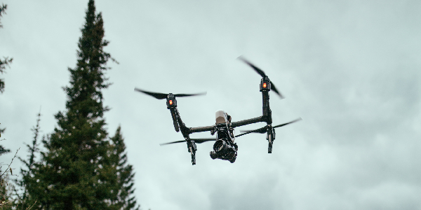

Cultivating Tomorrow's Harvest
The AI Revolution in Agriculture
Sofia Surro | 25 September 2023 9:30 AM
The world of agriculture is undergoing a transformative revolution, thanks to the rapid advancements in Artificial Intelligence (AI). While AI has already left its mark in various sectors like healthcare and transportation, it is now making significant inroads into agriculture, promising to increase efficiency, reduce waste, and enhance crop yields. In this article, we will explore some of the most exciting AI technologies that are reshaping the agricultural landscape.

Precision Agriculture
Precision agriculture is at the forefront of the AI revolution in farming. This technology harnesses AI algorithms, satellite imagery, and IoT (Internet of Things) devices to monitor and manage farms with unparalleled precision. Farmers can obtain real-time data on soil quality, weather conditions, and crop health, enabling them to make data-driven decisions.

AI-powered drones equipped with multispectral cameras can scan entire fields, identifying problem areas like pest infestations or nutrient deficiencies. Subsequently, autonomous tractors and machinery can respond to these findings by applying precise amounts of fertilizers, pesticides, and water only where needed. This not only reduces waste but also promotes sustainable farming practices.
Crop Monitoring and Predictive Analytics
AI is a game-changer in crop monitoring and predictive analytics. By analyzing historical data, weather forecasts, and current conditions, AI algorithms can predict crop diseases, pest invasions, and even optimal harvest times. Farmers can receive alerts and recommendations, allowing them to take proactive measures to protect their crops and optimize yield.
Moreover, AI-driven platforms can monitor crop growth and health remotely. For example, a combination of AI and computer vision can identify the growth stage of each plant, enabling farmers to tailor irrigation and nutrient schedules accordingly. This level of precision results in resource savings and improved crop quality.
Autonomous Farming Machinery
Imagine a future where farms are operated by autonomous robots and machinery guided by AI. This vision is becoming a reality. AI-powered tractors, harvesters, and even robotic weeders are being developed to carry out tasks traditionally performed by human labor. These machines can work 24/7, increasing productivity and reducing labor costs.
These autonomous machines are equipped with sensors and cameras that allow them to navigate fields, identify weeds, and perform tasks with incredible accuracy. They can also communicate with each other, optimizing their movements to avoid collisions and overlaps, further improving efficiency.
Smart Irrigation Systems
Water is a precious resource in agriculture, and AI is helping farmers use it more efficiently. Smart irrigation systems employ AI algorithms to analyze soil moisture levels, weather forecasts, and crop water requirements. By doing so, they can adjust the irrigation schedule in real time, ensuring that crops receive just the right amount of water, reducing water wastage, and improving crop health.
The integration of AI in agriculture represents a significant leap forward in the quest to feed a growing global population while minimizing the environmental impact of farming. These exciting technologies, from precision agriculture and predictive analytics to autonomous machinery and smart irrigation systems, are transforming the way we produce food. As AI continues to advance, we can expect even more innovations in the realm of agriculture, promising sustainable and efficient farming practices for years to come. This AI-driven revolution in agriculture holds the potential to increase food production, reduce waste, and address some of the most pressing challenges facing the agricultural industry.